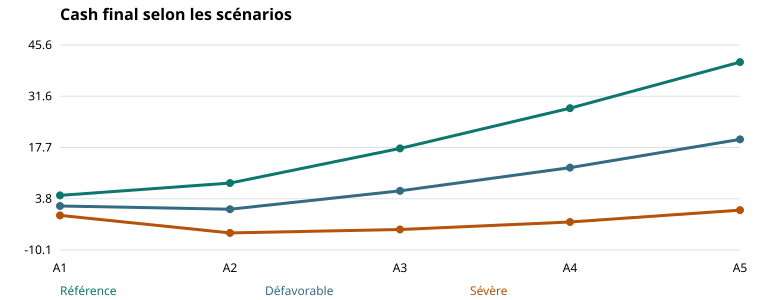

Séance 5 · 2 h 30 · Cours et approfondissements
Objectifs et parcours
- Construire des scénarios cohérents et en identifier les mécanismes.
- Calculer marges de sécurité et seuils de réaction.
- Distinguer couverture, résilience opérationnelle et flexibilité.
Parcours conseillé : problème initial (15 min), concepts (40 min), applications (45 min), discussion et cas (35 min), synthèse (15 min). Le polycopié inclut les approfondissements pour la relecture.
1. Sensibilité, scénario et stress inversé
Une sensibilité modifie un paramètre pour comprendre son effet. Un scénario combine plusieurs évolutions cohérentes. Un stress inversé part d’un échec défini, par exemple cash inférieur à 3, et cherche les conditions qui le provoquent. Ces exercices répondent à des questions différentes : facteur déterminant, robustesse d’ensemble, ou frontière de vulnérabilité.
Le scénario de référence n’est pas « le futur probable » par défaut. Une probabilité exige une justification. Les scénarios NGFS sont exploratoires et ne doivent pas être convertis automatiquement en probabilités ni en prévisions de chiffre d’affaires d’une entreprise. Leur utilisation demande une chaîne de transmission macroéconomie → secteur → entreprise. Nos scénarios numériques sont des constructions pédagogiques propres au cas, non des projections NGFS. [NGFS]
Il faut définir la durée du choc, le passage des prix aux clients, la réaction des volumes, les coûts évitables et le calendrier des adaptations. Une baisse de demande peut libérer du BFR tout en réduisant la marge : négliger l’un des deux effets fausse le cash.
2. Le moteur des scénarios communs
| Scénario | CA par rapport à la référence | Prix de l’énergie résiduelle | Autres hypothèses |
|---|---|---|---|
| Référence | 100 % | Pas de choc | Programme et financement communs |
| Défavorable | 90 % chaque année | +30 % | Coûts fixes inchangés |
| Sévère | 80 % chaque année | +50 % | Coûts fixes inchangés |
Le CA de chaque année est le CA de référence multiplié par 0,9 ou 0,8 ; la baisse ne se cumule pas de nouveau chaque année. Les charges variables restent 60 % du CA stressé. La base d’exposition énergétique résiduelle est max(0 ; 8 × 1,02^t − économies E et S actives). Le surcoût est le choc de prix multiplié par cette base. W concerne l’eau et ne réduit pas ce montant énergétique.
Cette convention maintient l’exposition physique résiduelle indépendante de la baisse du CA pour représenter une consommation en partie rigide. Elle est explicite et discutable ; une autre hypothèse demanderait un autre modèle. Les charges variables de référence contiennent déjà l’énergie : on ajoute uniquement le surcoût du choc.
3. Exemple résolu : le choc de A1
Dans le scénario défavorable, CA = 94,5 ; charges variables = 56,7 ; charges fixes = 24,48. L’énergie résiduelle est 8,16 avant gains ; le surcoût est 2,448. EBITDA = 94,5 − 56,7 − 24,48 − 2,448 = 10,872. Les intérêts restent 2,16 ; les amortissements 4 ; l’impôt est 1,178.
Le BFR devient 18,9, soit ΔBFR = −1,1 par rapport aux 20 historiques. Le CFO est 10,872 − 2,16 − 1,178 + 1,1 = 8,634. Le cash final est 4 + 8,634 − 20 + 14 − 4,8 = 1,834. Le CFADS est 10,872 − 1,178 + 1,1 − 4 = 6,794 ; DSCR = 6,794/6,96 = 0,976.
L’entreprise termine encore avec un cash positif, mais sous sa réserve de 3 ; le flux disponible est inférieur au service de dette selon la convention retenue. Cash positif, respect du coussin et respect du DSCR sont donc trois diagnostics distincts.
4. Résultats et interprétation du stress
| Année | CA | EBITDA | Cash final | DSCR |
|---|---|---|---|---|
| A1 | 94.500 | 10.872 | 1.834 | 0.976 |
| A2 | 99.225 | 17.163 | 0.958 | 1.468 |
| A3 | 104.186 | 19.299 | 5.951 | 1.782 |
| A4 | 109.396 | 20.822 | 12.254 | 2.034 |
| A5 | 114.865 | 22.438 | 19.933 | 2.322 |
En défavorable, le cash passe à 0,958 en A2 : les gains de E et S n’éliminent pas immédiatement les conséquences des chocs et du CAPEX eau de 4. Dans le scénario sévère, le cash devient négatif dès A1 et atteint environ −5,477 en A2. Une trésorerie négative est ici une impasse du modèle, pas la simulation d’un découvert déjà autorisé.
Ajouter une ligne de crédit suppose d’introduire plafond, disponibilité, date de tirage, intérêts et remboursement. Un apport résout une partie du besoin mais modifie les droits des associés. Un report de CAPEX doit retirer ou décaler ses gains et sa dépréciation. Une mesure adaptative se modélise par tous ses effets, et non par une amélioration isolée du cash.
Il faut aussi distinguer crise de liquidité et destruction durable de valeur. Un pont de trésorerie n’est utile que s’il finance une trajectoire capable de rembourser, ou s’il accompagne une restructuration crédible.
5. Protéger l’investissement et préserver la flexibilité
Froot, Scharfstein et Stein expliquent comment la gestion des risques peut protéger la capacité d’investissement lorsque les ressources externes sont plus coûteuses que les fonds internes. L’objectif n’est donc pas nécessairement de rendre le résultat parfaitement stable, mais de préserver les moyens disponibles aux moments décisifs. [FSS]
Trois réponses se distinguent : couverture financière d’un prix ou d’une devise ; réduction physique de l’exposition, par exemple efficacité énergétique ; flexibilité de la décision, par exemple déploiement par étapes. Chacune possède un coût et laisse un risque résiduel. Un contrat à prix fixe peut stabiliser un prix tout en augmentant le risque de volume minimum.
Une option réelle représente la faculté de modifier une décision après information nouvelle : reporter, étendre, réduire ou abandonner. Elle a de la valeur si l’information peut effectivement arriver avant une décision réversible et si l’entreprise conserve les droits d’agir. Attendre peut aussi coûter des recettes ou faire perdre une aide. [MIT] [BD]
Lecture graphique

6. Décider avec des seuils et des responsabilités
Un indicateur devient un outil de pilotage quand il est relié à une action. La formulation « suivre la trésorerie » est insuffisante. Il faut préciser horizon, seuil, date, responsable et décision autorisée. Exemple : si le cash minimum prévu sur treize semaines passe sous 3, le trésorier soumet sous cinq jours un plan de financement et de décalage des paiements ; les dépenses non engagées sont réexaminées.
Le DSCR d’alerte de 1,20 et la réserve de 3 sont propres au cas. Si le contrat prévoit un calcul différent, son test doit être reproduit exactement. Une négociation de covenant ne supprime pas l’obligation économique de rembourser et peut avoir un coût.
Pour un risque hydrique, on peut suivre une réserve opérationnelle ou des interruptions plutôt qu’un seul indicateur annuel d’intensité. Une mesure annuelle peut apparaître satisfaisante tout en masquant une rupture saisonnière.
7. Trois applications corrigées
Application 1 — Seuil d’EBITDA imposé par le DSCR
À paramètres de référence A1 inchangés : intérêts 2,16 ; amortissements 4 ; ΔBFR 1 ; maintenance 4 ; service 6,96. En supposant bénéfice imposable positif, quel EBITDA assure DSCR = 1,20 ?
Correction expliquée
Impôt = 0,25 × (EBITDA − 6,16). CFADS = 0,75 × EBITDA − 3,46. Imposer CFADS = 8,352 donne EBITDA = 15,7493. C’est une sensibilité à BFR constant ; elle ne se transpose pas directement à un choc de demande qui change le BFR.
Application 2 — Couverture de change
Échéance certaine de 100 000 unités de devise dans un an. Le coût sans couverture est calculé à 10 ou 12 MAD par unité. Un contrat à terme fixe le cours à 10,4 ; ignorer frais et marge. Comparer.
Correction expliquée
Sans couverture : 1 ou 1,2 M MAD ; avec couverture : 1,04. La couverture coûte 0,04 dans le premier scénario et économise 0,16 dans le second. Elle stabilise une dépense ; sa valeur décisionnelle dépend de l’échéance et de la fragilité du plan, pas seulement d’un gain ex post.
Application 3 — Option de report
À t0, investir 4 donne dans un an 7 ou 2 avec probabilités pédagogiques 50/50. Taux 10 %. Attendre permet à t1 de connaître l’état puis de payer 4 et recevoir immédiatement le montant connu ; il n’y a aucun autre coût ou flux. Comparer.
Correction expliquée
Investir maintenant : −4 + 4,5/1,1 = 0,091. Attendre : [0,5 × max(7 − 4 ; 0) + 0,5 × max(2 − 4 ; 0)]/1,1 = 1,364. L’avantage d’attendre est 1,273. Cet arbre décisionnel avec taux et probabilités supposés n’est pas une valorisation d’option en absence d’arbitrage ; modifier le droit d’attendre ou les recettes change le résultat.
8. Cas de synthèse : transformer le stress en décision
Atelier, 30 minutes. Préparer trois réponses au scénario défavorable : réserve externe, phasage, changement du mode solaire. Identifier les effets à recalculer et les conditions de faisabilité. Fixer un indicateur avancé et un seuil pour chaque réponse.
Éléments de solution
La plus forte insuffisance de cash par rapport au coussin en défavorable est 3 − 0,958 = 2,042 environ. C’est un écart avant coût d’une éventuelle facilité, pas le montant final d’une dette à lever. Le phasage de W économise temporairement 4 mais reporte 0,7 de gains et 0,4 d’amortissement ; il peut être inacceptable si l’eau devient une contrainte d’exploitation. Un PPA impose de refaire le plan et les contrats, conformément à la séance 4.
À retenir : le stress a une utilité lorsqu’il conduit à des conditions de décision et à des actions préparées. La séance 6 assemble ces éléments dans une trajectoire gouvernée et vérifiable.
Laboratoire — Recalculer le plan
Modifier les hypothèses puis calculer. Un seul modèle actualise exploitation, intérêts, impôt, BFR et trésorerie. Remboursement linéaire du principal du nouveau prêt sur cinq ans ; aucun dividende.
Références mobilisées
- [NGFS] NGFS. Scenarios Portal, FAQ : usages, incertitude et limites des scénarios. Consulter la source.
- [FSS] Froot, K. A., Scharfstein, D. S. et Stein, J. C. (1993). Risk Management: Coordinating Corporate Investment and Financing Policies. Journal of Finance, 48(5), 1629–1658. Consulter la source.
- [MIT] Jenter, D. et Lewellen, K. (2003), MIT Sloan. Finance Theory II, 15.402 : cours sur les flux, WACC/APV, structure du capital et options réelles. Consulter la source.
- [BD] Berk, J. et DeMarzo, P.. Corporate Finance, 6e édition, Pearson. Chapitres 2, 12, 14–18, 22, 24–27 et 30–31 selon la séance. Consulter la source.
Les calculs, exercices et données du cas sont des constructions pédagogiques originales. Les sources fondent les concepts et précautions indiqués, sans constituer une validation des paramètres fictifs.